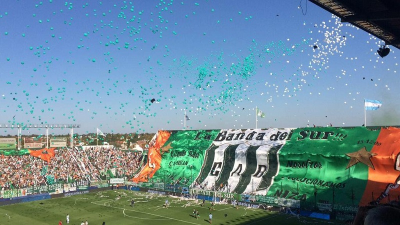

| HINCHADA | |
|  | Los hinchas de Banfield son conocidos en Argentina como "La banda del Sur". Los hinchas provienen de varias localidades del sur del Gran Buenos Aires pero donde tiene más hinchas es en las localidades de Banfield, Lomas de Zamora, Temperley, Monte Grande, Luis Guillón, Ezeiza, Adrogué y Remedios de Escalada siendo el club con más hinchas de esas ocho ciudades. Pero es fácil encontrar hinchas de Banfield en todo el sur del Gran Buenos Aires, como en Florencio Varela, San Francisco Solano, Gerlí, Lanús, Burzaco, Glew, Guernica, La Plata entre otras e incluso en el interior de la provincia de Buenos Aires como en Mar del Plata o en la Ciudad de Buenos Aires. La hinchada de Banfield también comparte una amistad con la hinchada del Atlético Nacional de Colombia. |
Bandera de los jugadores dedicada a la hinchada.